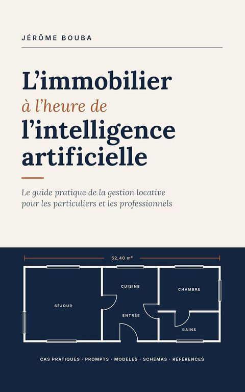

L'immobilier à l'heure de l'intelligence artificielle
Le guide pratique de la gestion locative pour les particuliers et les professionnels.
Rédiger une annonce, relire un bail, calculer une révision de loyer, relancer un impayé, comparer deux états des lieux : le livre montre, situation par situation, ce que l'IA sait faire et ce qu'il faut vérifier soi-même. Une règle le traverse : l'outil prépare, vous vérifiez, vous décidez.
- 32 chapitres courts et 4 cas pratiques
- 40 prompts prêts à copier
- 8 modèles de courriers et 20 schémas
- Un plan d'action en 30 jours